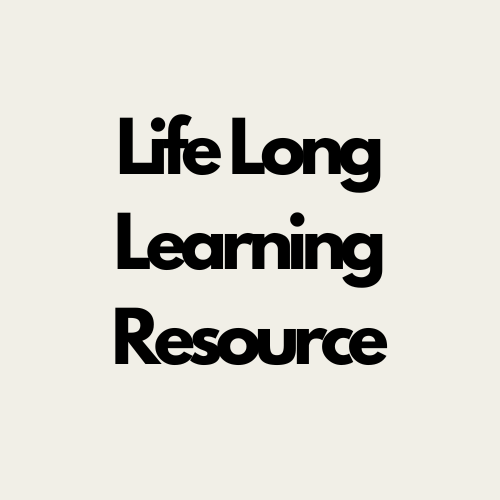

October 22nd, 2024
Weekly Update

Life Long Learning Resource - The Six Morning Habits of High Performers
The Six Morning Habits of High Performers Link
I recently completed an amazing course that simplifies everyday tasks to help us become the best version of ourselves. In today’s world, it’s easy to get lost in distractions and forget to prioritize ourselves. Setting aside time for self-development allows us to focus on who we truly want to be.
This resource contained 10 mini videos, each discussing six key morning habits used by high performers, summarized in the acronym SAVERS. Below is a breakdown of what it stands for, the video's explanation and my thoughts on each topic.
Silence (Meditation):
Sitting in silence can lower stress levels, provide clarity, and generate new thoughts. Meditation is something I’ve always wanted to include in my routine but found awkward. The course explains various forms of meditation, which helped me realize it's not just about sitting in silence but about setting intentions.
Affirmations:
Written statement that directs your focus of something of value. Focus on actions and values rather than unrealistic outcomes. Affirm what you are committed to. Why is it deeply meaningful to you? Affirm specific actions. When will you implement these actions? Affirmations remind us of what we’re committed to and why it’s meaningful, as well as the specific actions we’ll take to achieve our goals.
Visualization:
Mental preparations, activity focus, and positive anticipation. I think it's a powerful tool to stay motivated and help achieve your goals.
Exercise:
Exercising in the morning gives us energy by increasing blood flow and oxygenating your cells. You don't have to change your workout routine if you workout later in the day but doing something to raise the heart rate will help us feel more energized throughout the day. As someone who works from home, this is a habit want to adopt to avoid sitting all day.
Read:
We are one book away from improving any area of our life. Reading non-fiction books allows us to build any aspect of our life which we are lucky to have access to so much knowledge.
Scribing:
Writing down goals, reflections, or even to-do lists can help clear the mind. Journaling allows us to focus on what truly matters, ensuring our goals become reality one day.